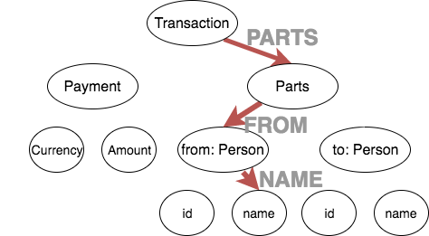

Fantastic
DSLs
and where to find them

Sergey Tselovalnikov
http://serce.me
GitHub @SerCeMan
Twitter @SerCeMan

Warning
What is DSL
A computer programming language of limited expressiveness focused on a particular domain
A language (or a set of abstractions) that's built to deal with a specific domain
Calling conventions
fun dotimes(n: Int, f: () -> Unit) {
for (i in 0..n-1) {
f()
}
}
dotimes(5, {
println("Hello, Kotlin!")
})
dotimes(5) {
println("Hello, Kotlin!")
}
do5times {
println("Hello, Kotlin!")
}
Extension functions
|
|
droid DSL
|
|
HTML
github.com/Kotlin/kotlinx.htmlIDE
Teamcity DSL
blog.jetbrains.com/teamcity/2016/11/kotlin-configuration-scripts-an-introduction/Gradle Kotlin
github.com/gradle/gradle-script-kotlinSpek
spekframework.orgAnko
github.com/Kotlin/ankoDomain

Data classes
|
|
|
|
Data classes
// update 2
val stansTrs2 = trs.copy(
parts = trs.parts.copy(
from = trs.parts.from.copy(
person = trs.parts.from.person.copy(
parts = trs.parts.from.person.parts.copy(
from = trs.parts.from.person.parts.from.copy(
person = trs.parts.from.person.parts.from.person.copy(
parts = trs.parts.from.person.parts.from.person.parts.copy(
from = trs.parts.from.person.parts.from.person.parts.from.copy(
person = trs.parts.from.person.parts.from.person.parts.from.person.copy(
parts = trs.parts.from.person.parts.from.person.parts.from.person.parts.copy(
from = trs.parts.from.person.parts.from.person.parts.from.person.parts.from.copy(
name = "jonh"
)
)
)
)
)
)
)
)
)
)
)
)
Clojure way
|
|
 |
Persistent Data Structures
|
|
Extension function on generic types
Delegated Properties
|
|
|
Kotlin DSL
|
|
Conclusions
- Kotlin provides many unique features to build DSLs easily
- DSLs in Kotlin work best as configuration API
- They can be a powerful abstraction over untyped data structures
Warning
- Most of the time a plain code is better than DSL
- Provide a way to extend and bypass your DSL
Don't use it for evil
gist.github.com/naixx/9d94c1498c4d45ffda3a
Thank you
Some resources:
-
Slides and code
github.com/SerCeMan/talk-fantastic-dsls -
Building DSL Instead of an IDE Plugin
jonnyzzz.com/blog/2016/09/02/dsl-building -
DSLs in Kotlin: The Good, the Bad and the Ugly
victor.kropp.name/blog/kotlin-dsls-good-bad-and-ugly